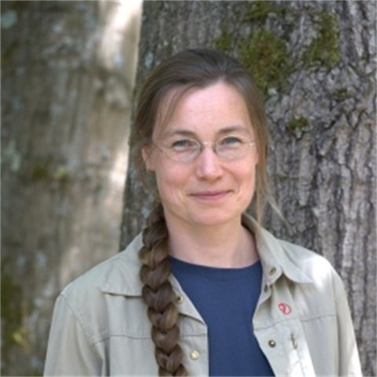
Collaborative Approach
Dr. Carolina Greiser
Stockholm University
Collaboration is at the heart of our research methodology. We work closely with local communities, conservation organizations, and our international academic partner institutions to gather diverse perspectives and ensure the relevance and applicability of our research outcomes. Our partner Dr Carolina Greiser has supported us with loggers and field technology to collect microclimate data.
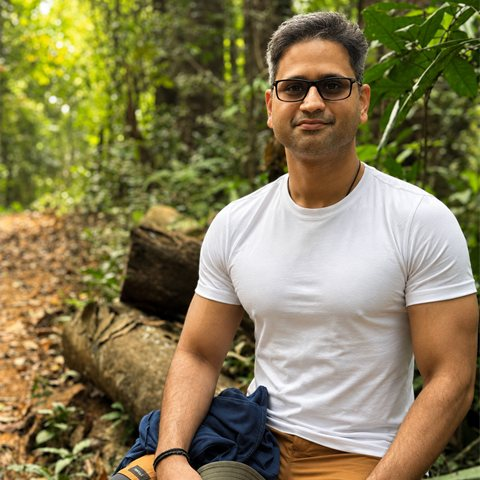
Environmental Analytics
Dr. Rohan Shetti
The Green Concept Labs
Our team comprises experts from diverse fields such as ecology, climatology, and data science. Their collective experience enables us to gain valuable insights into the intricate microclimate dynamics of the Western Ghats. Rohan focusses on the data analyses in the project using R programming.
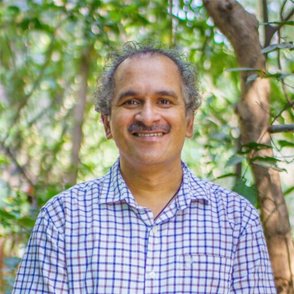
Impactful Contributions
Dr. Mandar Datar
Agharkar Research Institute
Our team's research is possible only because of dedicated network of scientists. By publishing our findings we aim to raise awareness and inspire action for the sustainable preservation of the Western Ghats. Dr Mandar Datar and his team have provided access to various sites in Northern Maharashtra to set up data loggers on various sites
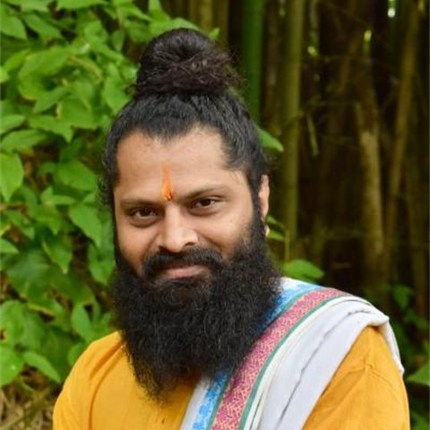
Plant physiology
Dr. Rakesh Tiwari
Post Doctoral Fellow, Uppsala University, Sweden
He is a Wenner-Gren Fellow at Bob Muscarella's lab studying the regulatory dynamics of photosynthesis in plants and tropical forest trees in response to heat. He measure photosynthetic light absorption using an instrument 'Aghora' which he developed since his Ph.D. He is keen on understanding how plants and ecosystems function in general.
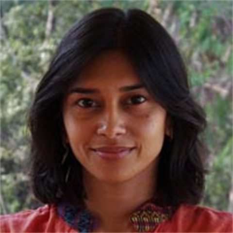
Forest ecology
Dr Meghana Krishnadas
National Centre for Biological Sciences
Dr Meghana Krishnadas, a dedicated ecologist has hosted multiple microclimate loggers and is studying the changes in microclimate temperatures within and on the edge of forests in Central and Southern Western Ghats
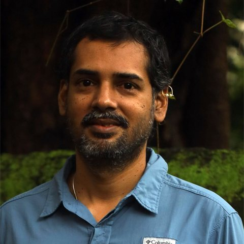
Northern Western Ghats
Mr. Nirmal U Kulkarni
Director, Mhadei Research Centre.
Mr Nirmal Kulkarni and his team at Mhadei Research centre have been pivotal in contributing to this study. They have made forest sites available for data collection and have provided insights about the nature of the local ecosystem from Northern Western Ghats
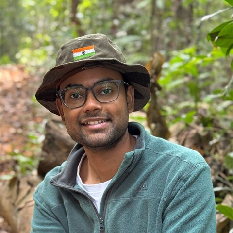
Complex systems
Mr. Swanand Khanapurkar
MS in Physics and Complexity Science from IISER Pune, India and ASU, USA.
Swanand is a researcher, educator and freelancer in the science of Complex Adaptive Systems (CAS), Anthropocene and sustainability studies. He practises the science of CAS to understand, document and model the complex dynamics of coupled social-natural systems. Through this lens, he engages in the projects exploring the interplay between microclimate and the social-ecological complexity of the landscapes, among other things.
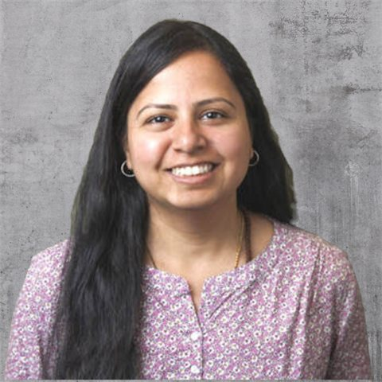
Vegetation ecology
Dr. Aboli Kulkarni (PhD)
Agharkar Research Institute, Pune · Max Planck Institute, Germany
Aboli is the co-founder of The Green Concept, an institute for Carbon Assessment and Restoration Ecology. She is an expert in vegetation ecology, biodiversity, and carbon sequestration assessments of forests. Her additional areas of expertise include Geographic Information Systems (GIS), Species Distribution Modeling (SDM), Environmental Impact Assessment (EIA), biodiversity reporting, plant taxonomy, and ecology of the Western Ghats.
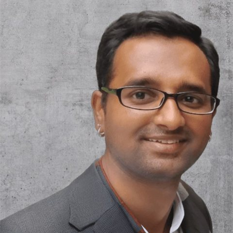
Data science
Dr. Girish Kulkarni (PhD)
IIT-Madras, IISER Pune and Heinrich Heine University, Germany
Girish is the co-founder of The Green Concept, an institute for Carbon Assessment and Restoration Ecology. He is a mathematician and data scientist with expertise in handling ecological, business, and social science data. Currently, he is pursuing post-doctoral research in artificial intelligence (AI) and the mathematics of machine learning.
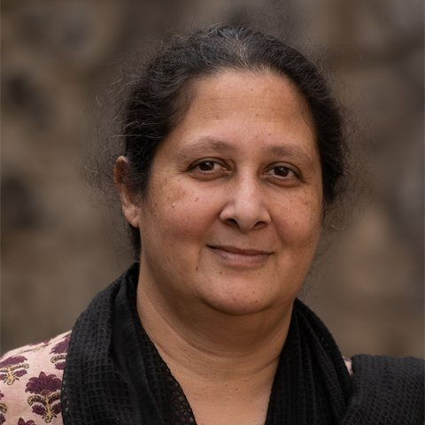
Dr Aparna Watve
Designation & bio to be added
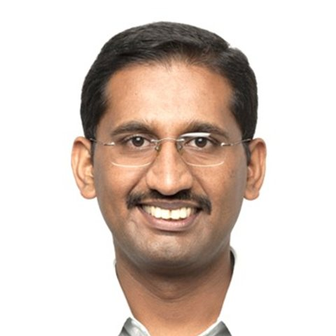
Rahul Prabhukhanolkar
Designation & bio to be added
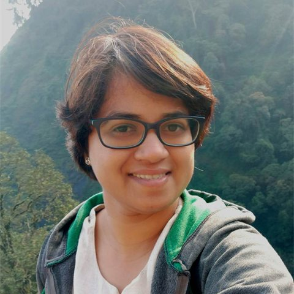
Rutuja K
Designation & bio to be added